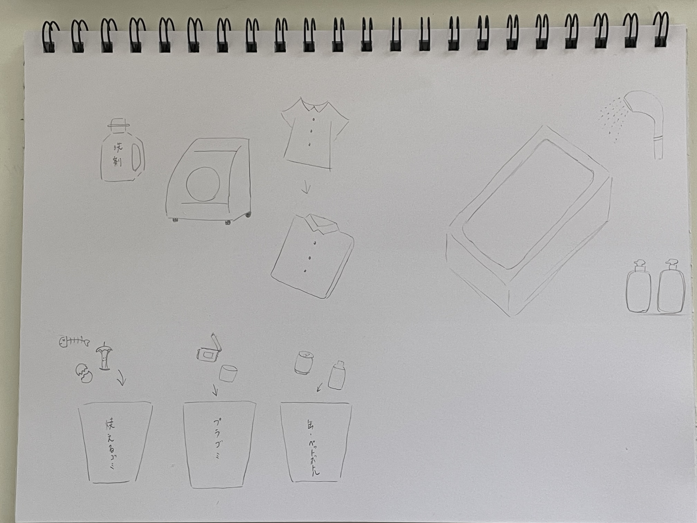

プログラムでモノを動かす
プログラムでモノを動かしているものにはどんなものがあるか？
グループ→改札、ルンバ、飲食店の配膳ロボット、エレベーター、ペットカメラ、
スマート家電、エアタグ
個人→イルミネーション、信号機、（セルフ）レジ、エスカレーター、エレベーター、
自動ドア、街灯、自動餌やり機、テレビの視聴予約・録画、目覚まし時計
プログラミング的な思考での手順
□テレビの視聴予約・録画
→常にループ。電源を入れたら消さない限り映像を映す。
if・・・視聴予約をする⇒電源を消していても予約した番組が始まる時間にテレビの電源が入る
if・・・視聴録画をする⇒日時と番組を選択⇒録画される
□（セルフ）レジ
→常にループ。スキャンされた商品の合計金額を出し、会計する。
if・・・割引やポイントがあれば対応する
プログラミングでできそうなこと
・洗濯を洗って干して畳んでしまう
・お風呂の洗浄
・分別をしてくれるゴミ箱
